MORPHEE® Multi-instance
Contenu
MORPHEE® Multi-instance¶
Born from our internal need to have independent application running on the same hardware architecture, MORPHEE® multi-instance has been developed to ensure multiple tests execution independently in terms of procedure and securities.
General concept¶
In order to meet the growing need for multi-UUT testing, especially in the field of battery, and after many feasibility, FEV has developed a new MORPHEE multi-instance concept.
Based on this, it is now possible to run several MORPHEE on the same computer. The first instance is seen as the ‘master instance’ (or main instance). It can be used to orchestrate all the other instances, to centralize hardware, share channels and distribute events.
All others instances are completely independent and can perform test in real time using own channels, screens, alarms, methods, etc..
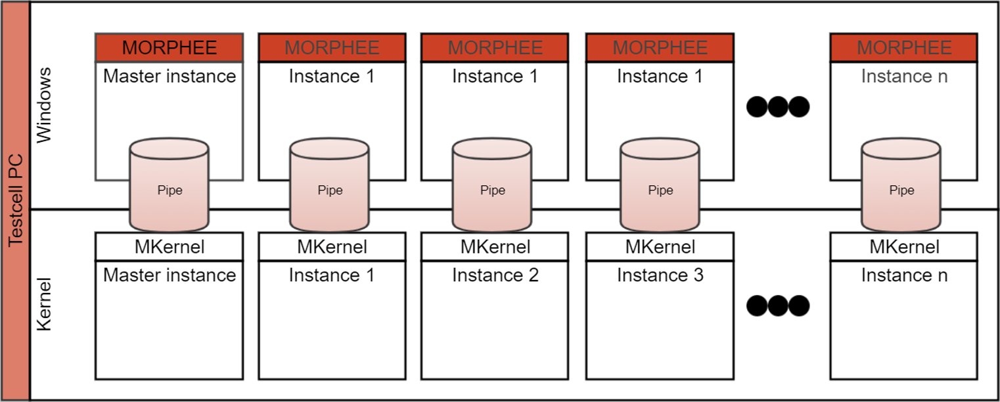
There are still many things to investigate with this new multi-instance concept, and actual limitations are as follow:
Ref |
Master |
Instances |
|---|---|---|
Up to 1 + 8 instances |
1 kHz |
1 kHz |
Up to 1 + 16 instances |
500 Hz |
500 Hz |
Up to 1 + 32 instances |
100 Hz |
100 Hz |
[!NOTE] This limitations has been achieved with FEV 8 cores computer.
Multi-Instance activation and configuration¶
Activation¶
Activation of the multi-instance can be done quickly, as it is sufficient to specify in MENV (MORPHEE Environment software) that an additional instance is required.
You can add as many instances as needed, and also delete them if they are not needed anymore;
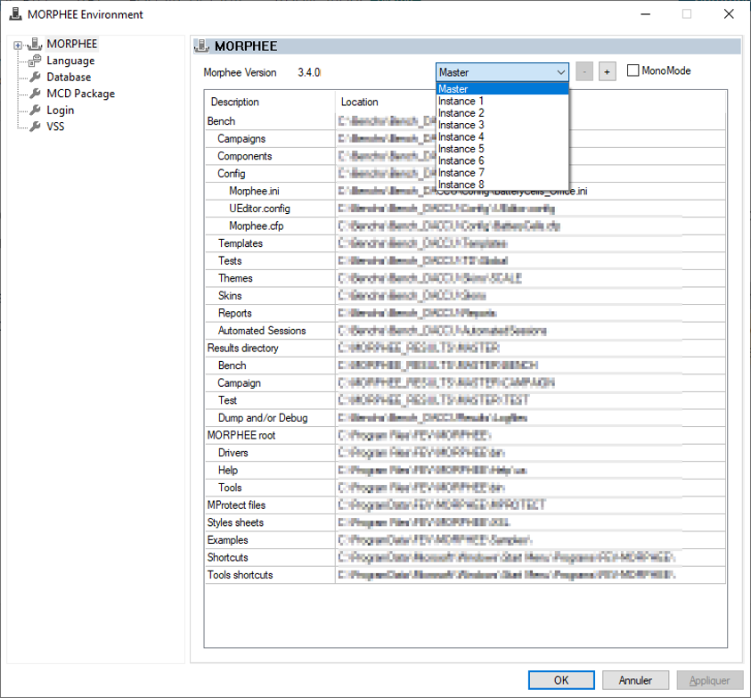
If no folders exist for multi-instance, MENV will create them and populate then with files from Master instance.
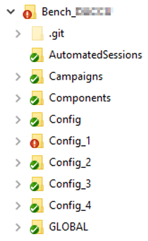
If folders are already existing, no actions will be performed.
Configuration¶
However, activation is not enough, as the whole system has to be configured in order to be able to run a test. Configuration of each instance is done directly from MENV layer;
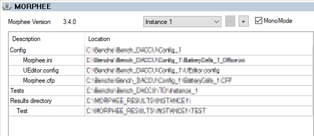
Not all parameters have to be modified as we fixed some rules to simplify global configuration. Only:
Initialization file (
Morphee.ini)Physical Configuration file (
Morphee.cfp)Editor configuration (
UEditor.config)Test Path and Result directory
All other parameters are common to all instances, mainly:
Components
Templates
Themes
Skins
Reports
Automatic Session
Binaries• …
Working with Instances¶
Editing / Starting a specific instance¶
By using MToolBar, you will every time prompted to know which instance you want to use;
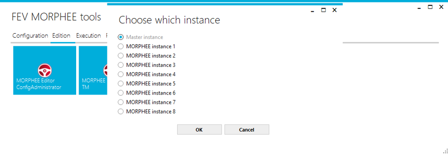
For;
Starting MORPHEE Editor
Starting MORPHEE Executive
Information of instance number is displayed on main Form and also in the main toolbar: 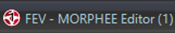
It can be very complex to work with many instances at the same time. Some basic rules can help to avoid problem link to quantity of place where modification can be done.
For example:
Use Meditor instance, only for configuration:
Adding and configuring features
Hardware links
Test cell configuration
Use Meditor master instance for all others things:
Master instance configuration
Component writing
Test Writing
Channel calibration
Etc…
Master Instance |
Others instances |
|---|---|
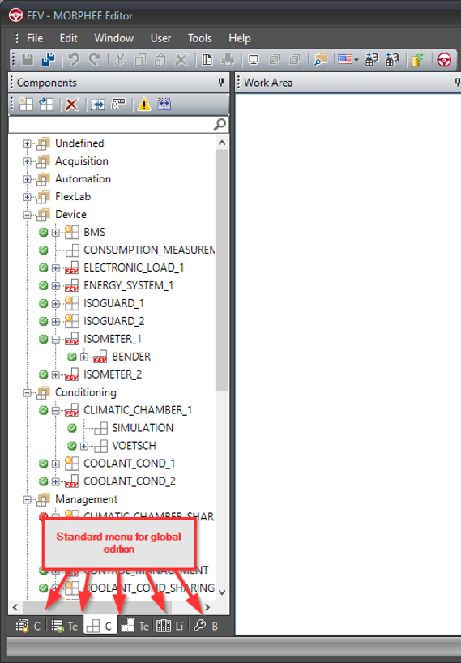 |
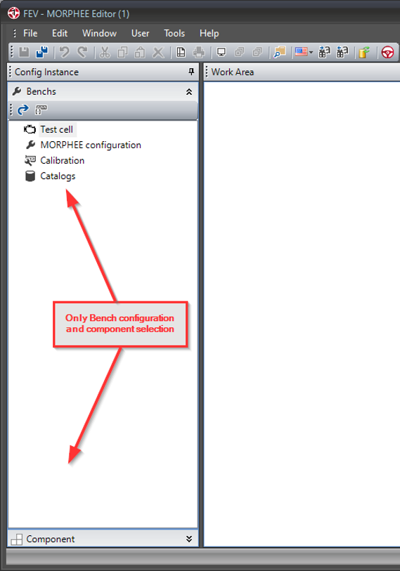 |
Exchanging data between instances¶
Each instance can be completely autonomous. Nevertheless, in most cases, it is necessary to share measurement channels, or simply status paths, between the instances. To make instance independent and use same component, following best practices could be used:
Sharing a channel from master instance to all instances
The name of the channel in master instance has to be the same in others instance. The channel type has to be [SHARED_IN]
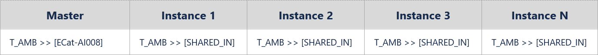
Sharing a channel from master to a specific instance
To keep instance generic and use the same channel name, the physical channel has to redirect the standard name from the instance.
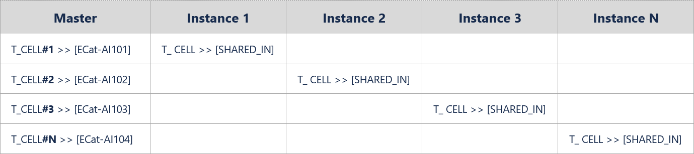
Getting channel from instances
To send value of channel to master, it is also possible to use the same principle, but channel type must be [SHARED-OUT].
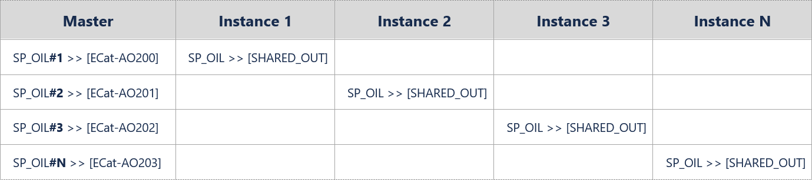